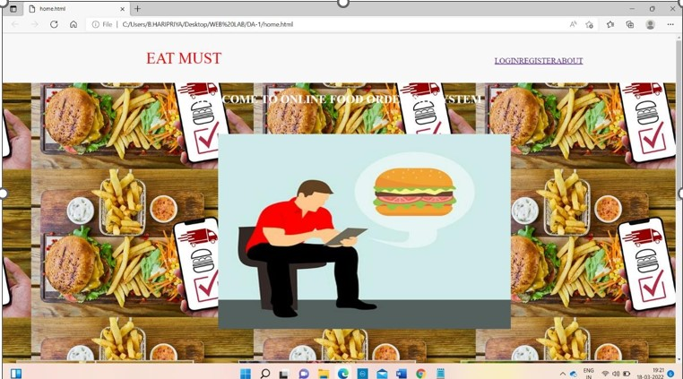
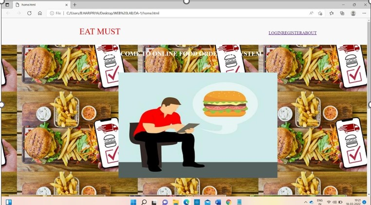

EAT MUST
An online shop evokes the physical analogy of buying products or services at a regular "bricks-and-mortar" retailer or shoping center.

Order Management System
Online stores typically enable shoppers to use "search" features to f ind specific models,brands or items.Online customers must have access.

Customer Management System
A typical online store enables the customer to browse the firm's rang e of products and services,view photos or images of the products.
ABOUT ONLINE FOOD ORDERING SYSTEM
online food ordering system is a form of electronic commerce which a llows consumers to directly buy goods or services from a seller over the inter net using a web browser.consumers find a product of interest by visting the we bsite of the retailer directly or by searching among alternative vendors using a shopping search engine.which displays the same products avilability and pri cing at eretailers .As of 2022 cutomers can shop online using a range of diffrent compu ters and devices.Incluing desktop computers,laptops,tablet computer and smartp hones
An online shop evokes the physical analogy of buying products or serv ices at a regular "bricks-andmortar"retailer or shopping center:the process is called bussinesstoconsumer(B2C) online shopping.